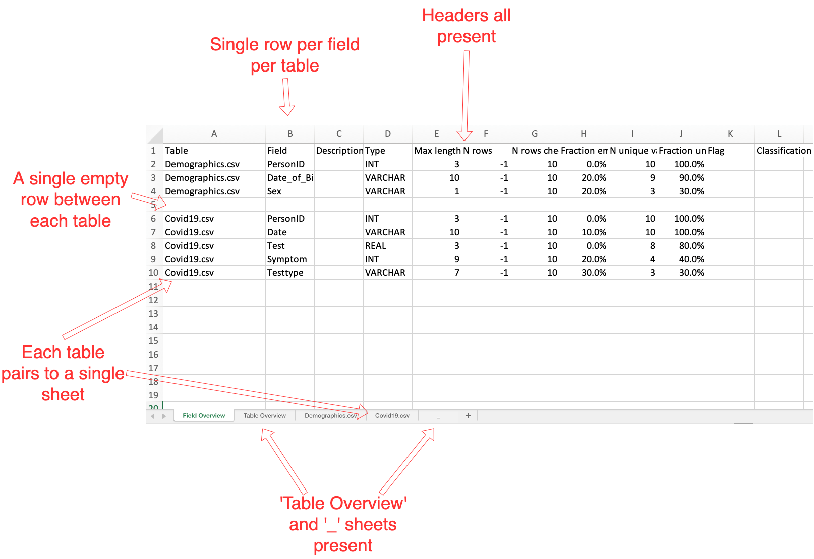
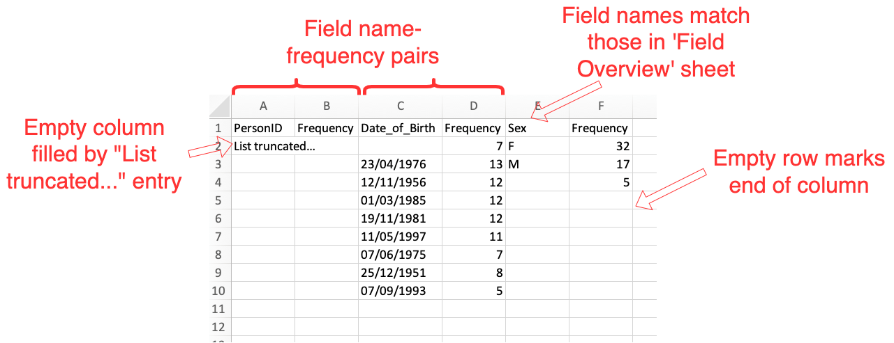

Overview of process¶
A Scan Report is the basic unit representing a single data source. In order to create a new Scan Report in the Carrot-Mapper system, one must upload a Scan Report Form to the system. Once uploaded, an ingestion process reads this file and populates the system with its contents. The documentation below explains this process and the options available to users.
The Scan Report Upload form¶
To upload a new Scan Report Form, navigate to the Scan Reports page and then click "New Scan Report". This opens a new web form.
Firstly select an existing Data Partner from the dropdown list. This will populate the Dataset field with existing Datasets linked to this Data Partner. These are grouped by Project that the user has access to. Select the correct Dataset that the new Scan Report should belong to.
Creating a new Dataset
If there is no appropriate Dataset already existing, click the Add New button to the right of the Dataset dropdown. This opens a panel.
Enter a name for the Dataset (which must be globally unique - if you receive an error then it is likely that this Dataset name is already taken), and select at least one Project to which it will be associated. Then select the visibility, editor and admin options as appropriate (see Projects, Datasets, Scan Reports, and Permissions for an explanation of these. The Dataset creator is automatically assigned as an editor.
Finally, click the "Add new Dataset" button to create the new Dataset.
Setting visibility/viewers and editors - permissions¶
Once a Dataset has been selected, select the appropriate permissions for the Scan Report. The user performing the upload is set as the Scan Report's Author, and has administrator rights to the Scan Report. Additional users can be set as editors, and, if the Scan Report is set as RESTRICTED, viewers. Note that if a user has a given level of access to the Dataset, then they inherit that same access to the Scan Report automatically.
Upload Form¶
Choose a Scan Report in the "WhiteRabbit ScanReport" field, and optionally choose a dictionary file in the "Data Dictionary" field. The formats of these two files are as described below. Then click the "Submit" button to begin the upload process. This will launch an instance of the ProcessQueue.
The Scan Report file format¶
The Scan Report File should be in the format as output by the White Rabbit tool. Broadly, this is an Excel .xlsx file with the following non-exhaustive format. At upload, a series of checks are run upon the file to ensure it meets certain standards before it is further processed, and an error message is presented if these checks fail.
.xlsxfile format- The first sheet is 'Field Overview' where:
- There is no empty row or column at the start of the sheet.
- The first 10 column headers are: "Table", "Field", "Description", "Type", "Max length", "N rows", "N rows checked", "Fraction empty", "N unique values", "Fraction unique"
- A contiguous group of rows is associated to each table in the dataset. Each group should be separated from the next by a blank row. There is no blank between the header row and the first row of the first group. Two contiguous blank rows will be detected as the end of the sheet, and no further entries will be added.
- Within each group, a single row corresponds to a single field in the associated table.
- Each table name in the 'Field Overview' table must be associated
to a single sheet with identical name. This imposes a 30-character
limit on the table names including
.csvending.
- 2 additional sheets named 'Table Overview' and '_' must also be present, although they are never used.
- In each of the sheets associated to a table from the 'Field Overview' tab:
- Each field in the table is represented by 2 columns in the sheet.
The first column has in its header row the name of the field, while
the second column is always headed 'Frequency'. Thus a typical sheet
might be headed with
"Person", "Frequency", "DOB", "Frequency", "Observation", "Frequency"etc. - The fields in the sheet must match exactly with the field names provided for this table in the 'Field Overview' sheet.
- Each pair of columns is populated by all values that appear in the given field, with their corresponding frequency. Usually, this frequency should be no less than 5 due to applying count thresholding.
- Pairs of columns associated to a given field can differ in length from pairs of columns associated to other fields.
- An entry in a given pair of columns which is blank in both the field name column and Frequency column will count as the end of the column.
- If all entries in a given field should be redacted, it can be helpful to add a single entry in the field, wth value "List truncated..." to show the intent.
- There is no empty row or column at the start of the sheet.
These stipulations are summarised in the following two annotated screenshots.
The 'Field Overview' sheet: 
Single sheet associated to a single table: 
The Data Dictionary file format¶
The optionally-supplied Data Dictionary file must be in .csv format, and with the format as defined at the CO-CONNECT data standards page